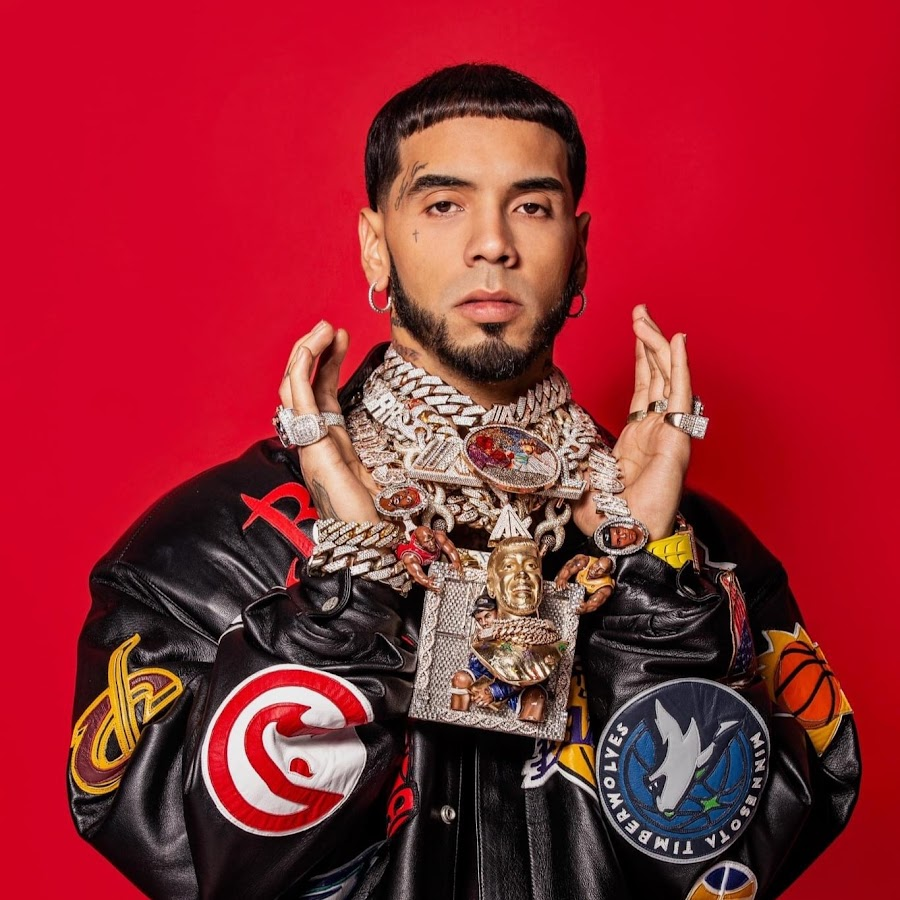

Emmanuel Gazmey Santiago, más conocido por su nombre artístico Anuel AA,nacido en Carolina Puerto rico, 27 de noviembre es un rapero, cantante, y compositor
puertorriqueño. Se le considera un pionero del movimiento del trap latino y la vida urbana en Puerto Rico.
BIOGRAFIA
Proveniente de una familia de clase media de Carolina, Puerto Rico, Anuel nació el 27 de noviembre de 1992, siendo hijo del músico y empresario José Gazmey, quien fue vicepresidente de Sony Music en Puerto Rico, quien es amigo del también cantante Tempo. Realizó estudios en el colegio María Auxiliadora en Carolina, y en el transcurso de su formación fue mostrando
interés por la música comenzando su carrera en el año 2010 bajo el sello de Maybach Music

albumes
albumes
canciones mas escuchadas
publicacion
duracion
imagen
REAL HASTA
LA MUERTE
hipocrita:209M, Na'Nuevo:102M,
Ella Quiere Beber:95M
Real Hasta La Muerte
0:43:14
EMMANUEL
china:2006M, SECRETO:1383M,
hasta que Dios diga: 366M
29 de mayo de 2020
1:28:32
LOS DIOSES FT Ozuna
Los dioses: 173M, DIME TÚ: 75M, ANTES:54M
22 de enero de 2021
0:41:59
LAS LEYENDAS
NUNCA MUEREN
Súbelo:171M, Leyenda:80M, Dictadura: 77M
26 de noviembre de 2021
1:07:00
LAS LEYENDAS
NUNCA MUEREN 2
Mercedes Tintia:89M, si yo me muero:39M, brother 39M